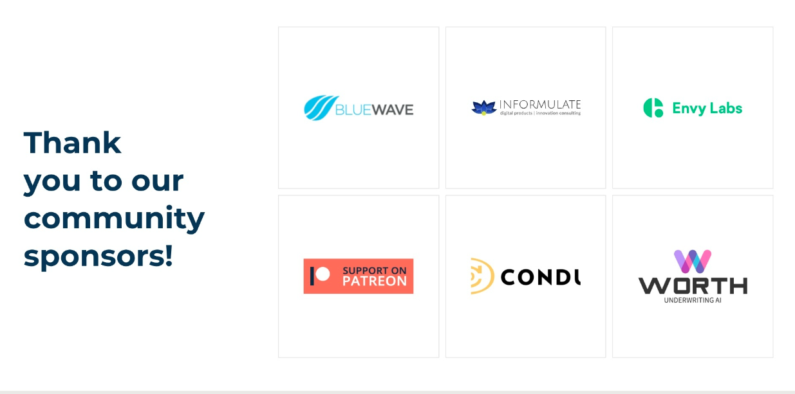

layout: true --- class: center <img src="https://raw.githubusercontent.com/snohio/devopsorlando/main/docs/assets/OrlandoDevOps2-04.png" width="580"> ## What DevOps Means to Me ### ODO Interview Series #### An Orlando Devs Community Group ??? Notes: * Welcome to another Orlando DevOps Community Group Meetup! * This is the first event in our Year of DevOps - 2025 meetups. * Today one of our own Orlando DevOps Community Meetup Members will sit down with four members of our DevOps Community and ask questions to learn what DevOps Is and what it means to them. * Please complete the survey at the end of this presentation to let us know how we did. * First some house keeping. --- class: foo <img src="https://orlandodevs.com/static/img/footer-odev.png" align="right" width="100"> ## [Orlando Devs Code of Conduct](https://orlandodevs.com/code-of-conduct/) > This code of conduct outlines our expectations for participants within the Orlando Devs community (relevant to both our Slack and Meetup), as well as steps to reporting unacceptable behavior. We are committed to providing a welcoming and inspiring community for all and expect our code of conduct to be honored. Anyone who violates this code of conduct may be banned from the community. ### Our community strives to: #### **Be friendly and patient.** #### **Be welcoming** We strive to be a community that welcomes and supports people of all backgrounds and identities. #### **Be considerate** Your actions (and words) affect users and colleagues, and you should take those consequences into account. Remember that we’re a very diverse community, so you might not be communicating in someone else’s primary language. #### **Be respectful** Not all of us will agree all the time, but disagreement is no excuse for poor behavior and poor manners. It’s important to remember that a community where people feel uncomfortable or threatened is not a productive one. #### **Be careful in the words that we choose** we are a community of professionals, and we conduct ourselves professionally. Be kind to others. Do not insult or put down other participants. Harassment and other exclusionary behavior aren’t acceptable. #### **Try to understand why we disagree** Disagreements, both social and technical, happen all the time. It is important that we resolve disagreements and differing views constructively. ??? Notes: * As a member of the Orlando Devs Community, we agree to participate in their Code of Conduct and make it our own. * Read the Code of Conduct * Say the bullet points. * You can find the complete Code of Conduct at orlando devs dot com. --- class: foo, center ## Thanks to our ODevs Sponsors  ??? Notes: * Also, as a part of the Orlando Devs community, we are grateful for our sponsors that help provide spaces, food, and resources to all of the Orlando Devs Community Groups. * Say Thank You to all of the sponsors on the list. --- <img src="https://www.picpedia.org/handwriting/images/agenda.jpg" class="center" width="500"> <br> 7:00 - Official Welcoming <br> 7:10 - What DevOps Means to Me - Mike Butler <br> 7:20 - Interview with Rob Schneider <br> 7:35 - Interview with Dan Crenshaw<br> 7:50 - Interview with Anthony Eden<br> 8:10 - Panel Q & A<br> 8:25 - Wrap up, Thank You, and Survey Link<br> 8:45 - The Ravenous Pig Beer Garden<br> ??? NOTES: * This is the schedule for todays event. We will try to stay on schedule the best we can. * Please note that following our event, you are welcome to meet up at The Ravenous Pig Beer Garden for more discourse. --- class: center # Ask a Question <img src="../assets/qr/0424-panel-questions.png" alt="Forky Asks a Question" width="500"> ??? NOTES: * Scan this QR code and open the Google Form for Questions * At any time during this presentation please submit a question. If we have time during individual interviews we will use your questions or save them for our round table at the end. * Now I would like to thank Dan Myers for welcoming us in this beautiful facility and let him fill you in on some facility logistics. --- class: foo, presenter ## Dan Myers - Rollins College <img src="https://cdn.sanity.io/images/qe2ul2l0/production/ff7d7d4ef34697f276b39c84d7b1e96e06e7132a-4000x2666.jpg?w=300&q=70&fit=max&auto=format&dpr=1.5" alt="Dan Myers" align="left" hspace="50"> <br> ### PhD and Assistant Professor of Computer Science <br> #### Dan S. Myers, Ph.D., is an Associate Professor of Computer Science at Rollins College in Orlando, Florida. His research interests lie in computer performance modeling and queueing theory12. Dr. Myers received his Ph.D. in Computer Sciences from the University of Wisconsin-Madison. #### In addition to his academic pursuits, Dr. Myers has a reputation for his dad jokes among his students. As one computer science major aptly put it, “Dr. Myers has two specialties: computer performance modeling and dad jokes” 3. It’s always refreshing to have a professor who can balance serious research with a good sense of humor! #### If you're interested in learning more about the Computer Science program at Rollins College, you can explore the major in Computer Science or the minor in Data Analytics. Dr. Myers is actively involved in teaching and mentoring students in these fields, and his expertise contributes to the vibrant academic community at Rollins College. ??? * Introduce Dan Myers * Dan talks about Rollins, the building, and parking validation. * Mike grabs second mic * Dan Introduces Mike Butler * Mike asks Dan a couple of questions before own introduction --- class: foo, presenter ## Mike Butler - Progress Chef <img src="../assets/mike-butler-speaker.jpg" align="left" width="300" hspace="50"> <br> ### DevOps Enthusiast, Space Nerd, and Principled Sales Engineer <br><br><br> #### DevOps Enthusiast since 2016, space nerd and currently Sr. Sales Engineer at Progress for Chef Software. Mike has seen all sides of the Coded Enterprise, being the product owner for Chef at a very large healthcare organization. It is always a challenge to help application and OS support teams to understand “shifting left” or better local development, local testing, using a source code repository for code and helping to identify and track work. Treating Everything as Code helps drive DevOps for n00bs, it certainly helped him! ??? NOTES: (5 minutes) * Thanks Dan! So before we jump in and to give folks a bit of a taste for what's to come this evening, I have a couple of questions for you. * Tell me a little bit about the Computer Science program here at Rollins. * What are some of the changes Rollins has made to modernize it's programs with the introduction of DevOps and Cloud & Platform Engineering? * What do you see coming with the latest advances in AI? How is that changing the programs here at Rollins? MY BIO (5 minutes) * So, Hi there! My name is Mike Butler. I am a Solution Architect at Progress Chef. Ask me another time about being a Solution Architect or Chef, as a few folks here know, I can drone on for hours. * Prior to working at Progress, I was a Sr. Manager at Optum which held the corporate IT platforms for all of UnitedHealth Group which included Optum and United Healthcare. I was there for 21 years, and the last ten I spend in a leadership position and have interviewed and hired my fair share of people across the globe. * The last 6 years, I ran a team called DevOps Enablement Services where we primarily managed the Chef platform and Community of Practice. I had the fortune of building that team from scratch and brought folks will all sorts of backgrounds together to deliver a tools with a DevOps experience. * So, I've said DevOps a lot there. And this is an Orlando DevOps Community Group Meetup. * How many people think they have an understand of or can define DevOps? * Who is new to this terminology? * Ok, so here is my definition of DevOps. * I like to define it as a set of practices and principles that allow businesses to accelerate the delivery of products and services. There are a lot of things that DevOps is NOT. * It is NOT a job, although that is in contrary to the topic. * It is NOT a team, although I will often mention it that way. * It is NOT a CI/CD pipeline, although many believe it to be. * And it is NOT a Product, although Microsoft and others like to sell it that way. * Well, actually it is a little bit all of those things and the term gets co-opted in that and more. * To me, deep down, it's about Operational Tasks, moving them to a Development process and Mindset. * If you are a Developer, it is about including the Operations Tasks and thinking operationally about the things you deliver. * Roles such as Cloud or Platform Engineer, Site Reliability Engineer, and even Software Engineers and IT Operations all play a part in DevOps. * Up First, I would like to welcome Rob Schneider to the stage! --- class: foo, presenter ## Rob Schneider <img src="https://media.licdn.com/dms/image/v2/D4E03AQHCwQqYTxRpdA/profile-displayphoto-shrink_800_800/profile-displayphoto-shrink_800_800/0/1725974730266?e=1745452800&v=beta&t=6r_I1IJQzf4f04XFXgxQa1zGwHy9MPNVKGbMLn3joLw" width="300" align="left" hspace="50"> <br> ### Sr. Software Engineer at GitHub<br><br><br><br><br><br> #### Rob is a Senior Software Engineer working on the Traffic team at GitHub! He's been in the Network/Cloud/SRE space for over 10 years and has worked with everything from physical switches to high performant reverse proxies. ??? NOTES: Discussing journeys, community and advice for people new to Computer Science. --- class: foo, presenter ## Dan Crenshaw <img src="https://media.licdn.com/dms/image/v2/C5603AQHhAdEcatMaGA/profile-displayphoto-shrink_800_800/profile-displayphoto-shrink_800_800/0/1655088773404?e=1745452800&v=beta&t=pOTt0UhrU-ZRybNnSSRgaGNB14FDoBO05u5QkRn-2NQ" width="300" align="left" hspace="50"> <br><br> ### DevSecOps Engineer at Cole Engineering Services <br><br><br><br> #### Dan is not the congressman from Texas. He's just "Some dude who got sick of cooking". ??? NOTES --- class: foo, presenter ## Anthony Eden <img src="https://assets-production.dnsimple.com/vite/assets/dnsimple-logo-black-Cedu9iYe.svg" align="right"> <img src="https://media.licdn.com/dms/image/v2/C4D03AQHZbwLB3GJ9fg/profile-displayphoto-shrink_800_800/profile-displayphoto-shrink_800_800/0/1581085554479?e=1745452800&v=beta&t=F1b_l41lcUK4EivT9ObPHV3mfK3xucQtH1YfOblIqE8" width="300" align="left" hspace="50"> <br> ### Founder and CEO of DNSimple <br><br><br><br><br><br><br> #### Anthony Eden is the founder of DNSimple and the perpetrator of numerous open source projects such as exdns, erldns, ActiveWarehouse and many others. Anthony has also contributed to a wide variety of open source projects over the past 20 years as a software developer, using multiple languages including Java, Python, Ruby, Clojure, Go, Erlang and Elixir. Anthony has spoken at conferences in both the US and Europe on topics such as Ruby, Rails, Erlang and various software development techniques and best practices. Anthony currently lives near Melbourne, Florida. ??? NOTES: Welcome Anthony! --- class: center ## Knights of the DevOps Roundtable ??? NOTES: It is that time of our night where we will invite all of our guests on stage for you to ask your questions. Let's look at the Q&A. While we compile a few of those, let me start off with one that I wanted to ask everyone. * Where do you think DevOps / Cloud & Platform Engineering / SRE is heading * How do you see AI changing the jobs roles? --- class: foo, center <img src="../assets/DevOps Flyer - 2025.jpg" width="800"> --- class: center, thanks # Thank You Thanks again to our Sponsors and to Rollins College for Hosting! <img src="https://vignette.wikia.nocookie.net/logopedia/images/a/ae/Rollins-Logo.png/revision/latest?cb=20140614223916" width="300"> You are welcome to meet us at The Ravenous Pig for more discourse. <img src="https://the32789.com/wp-content/uploads/2020/11/the32789-Ravenous-Pig-0370-1600x1067.jpg" width="300"> --- class: center # Event Survey <img src="../assets/qr/0424-get-a-job-survey.png" alt="Get a Job Survey" width="500"> ??? On your way out the door, please scan this and take our short 60 second survey. And I'll see you at the Ravenous Pig!